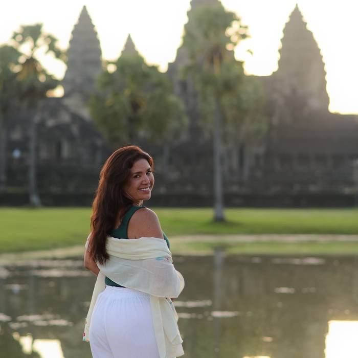
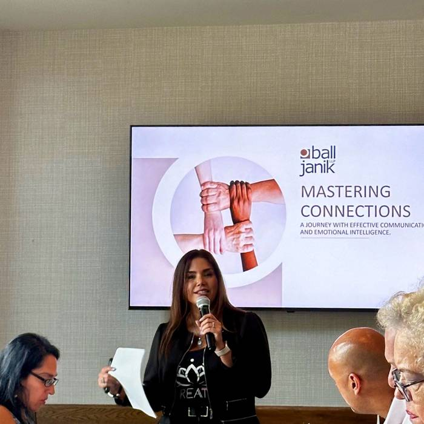

How she worksCómo trabaja
Everything she facilitates looks at the same thing: the pattern underneath the symptom. What repeats in a family, in a body, in a team, long after anyone decided it should.
Todo lo que facilita mira lo mismo: el patrón que está debajo del síntoma. Lo que se repite en una familia, en un cuerpo, en un equipo, mucho después de que alguien lo haya decidido.
A circle, a two-day training and a one-to-one session are different doors into the same question. What is acting here that nobody has named yet.
Un círculo, una formación de dos días y una sesión individual son puertas distintas a la misma pregunta. Qué está actuando aquí que todavía nadie ha nombrado.
A space for inner exploration through the systemic lens.
Un espacio de exploración interior a través de la mirada sistémica.
Where she postsDónde publica
The work, the rooms and the road, as it happens. El trabajo, las salas y el camino, según va pasando.

